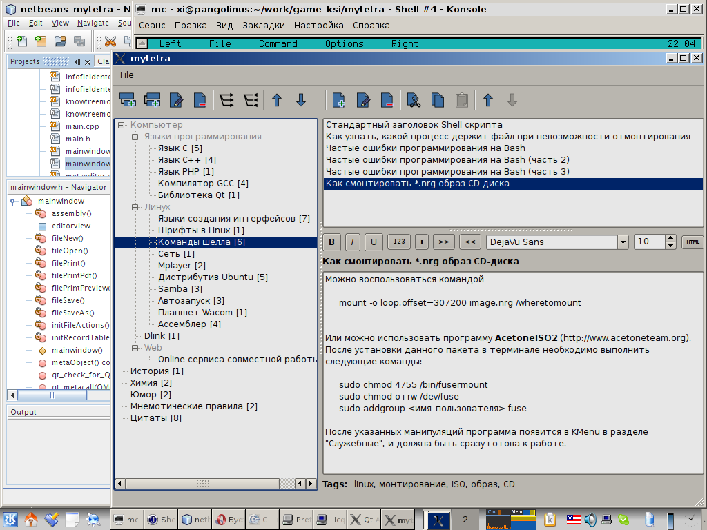
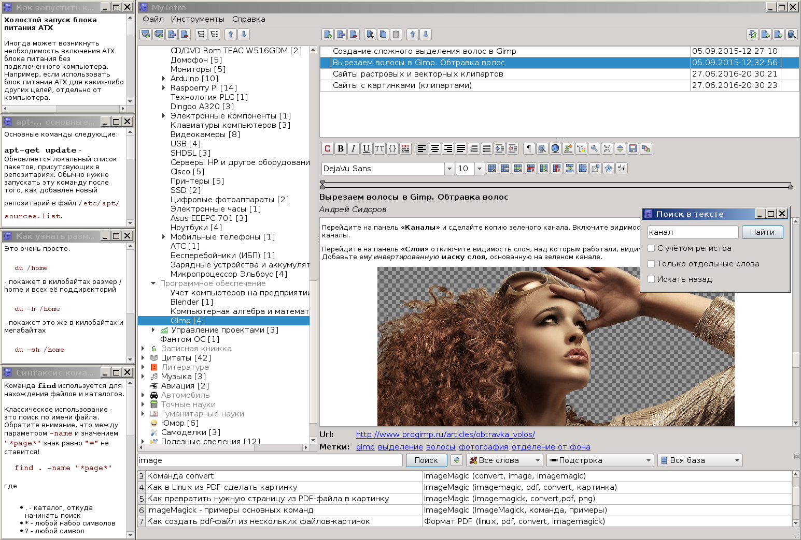
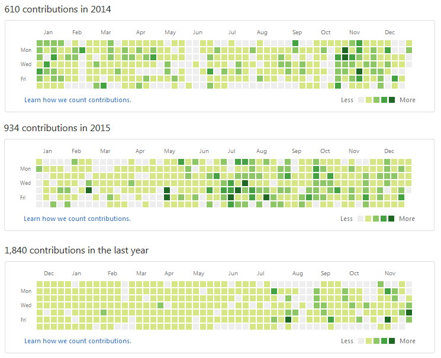
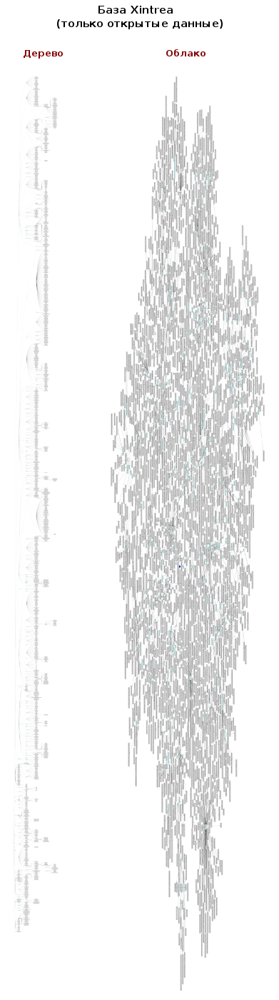
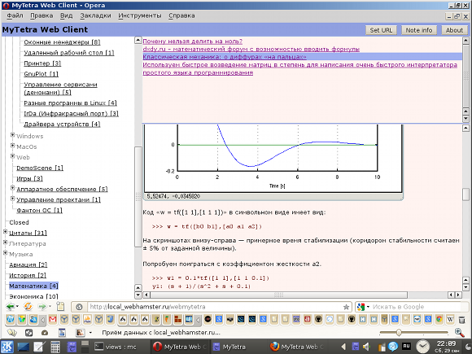
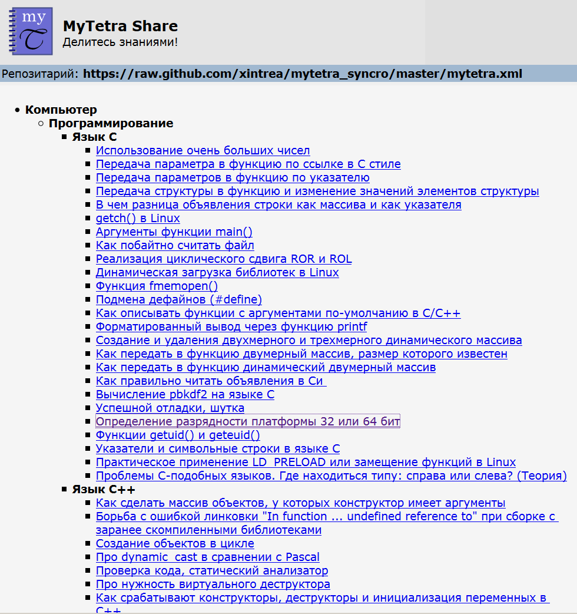
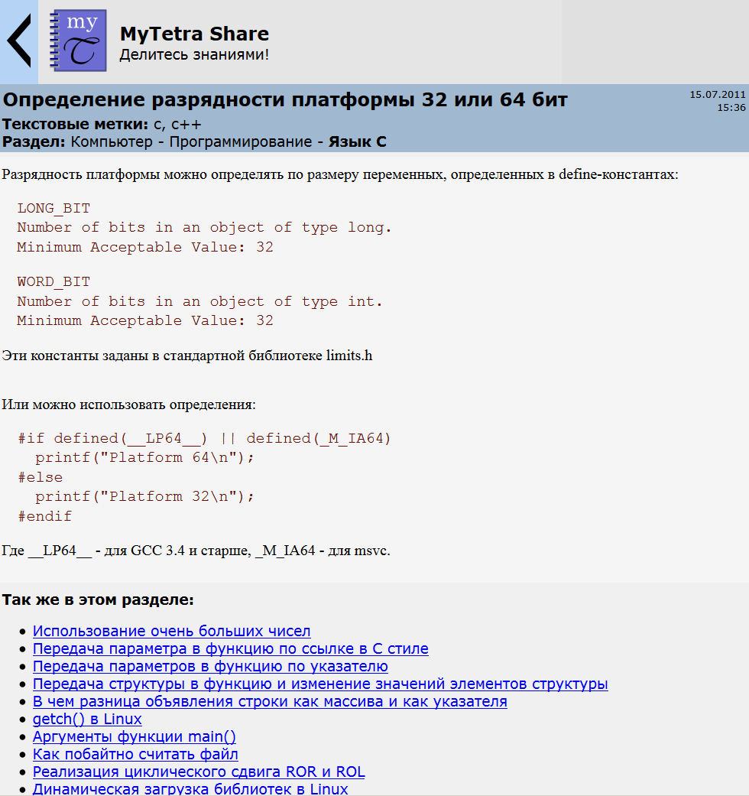

Какими программами постоянно пользуются люди? Если подумать над этим вопросом, то окажется, что список этот не такой уж большой. К постоянно используемым программам можно отнести: саму операционную систему, файловый менеджер, текстовый редактор, браузер, мессенджер. Это именно тот базовый набор, которым пользуется на компьютере практически каждый человек. Требования к таким программам должны быть высокими: безотказная работа, быстрое выполнение всех функций, понятный и удобный интерфейс.
Можно сказать, что вышеперечисленный набор программ — это самые нужные программы, которыми пользуется человек в цифровую эпоху. Этот список покрывает все базовые потребности человека-пользователя. Или не все? Есть ли еще одна базовая потребность, которая не учтена в вышеприведенном списке самых необходимых программ? Является ли эта потребность самой важной из тех, что должен автоматизировать компьютер? Для меня такая потребность есть, но в списке самых используемых программ ей места не нашлось. Что же это за потребность?
Историческая ретроспектива
Ранее компьютер считался устройством для проведения вычислений. Даже бытовые старые компьютеры ориентировались на очень продвинутого пользователя, который использовал компьютер для вычислений путем написания собственных небольших программ. Для полноценной работы с компьютером, пользователь должен был знать язык программирования. Дальнейший взлет более продвинутых компьютерных платформ произошел во многом благодаря появлению первых вариантов электронных таблиц, которые тоже были нацелены на вычисления, но снижали требования к пользователю, не заставляя его быть программистом. В любом случае, это был период, когда назначение компьютера напрямую соответствовало его названию. Сам вычислительный модуль — процессор — ставился во главу угла, ведь именно появление микропроцессора сделало возможным появление самого компьютера.
Однако, последующее развитие не зациклилось на улучшении характеристик процессоров. Развивались все компоненты компьютера, и, в частности, память. Память оперативная, и память постоянная. В тот момент, когда стало ясно, что компьютер способен хранить и быстро доставать невиданные объемы данных, появилась возможность реализовать на компьютере другую давнишнюю мечту человека: накопление и быстрое извлечение данных. Сделать как бы безграничную память, некоторое место, в которое можно положить информацию, а потом быстро ее найти и извлечь. Так стали развиваться базы данных и языки запросов.
Постепенно появилась самая большая в мире база данных — Интернет, со всеми его миллиардами сайтов: википедиями, библиотеками, форумами и соцсетями. Инструменты поиска кардинально поменялись, а обычный пользователь даже не может иметь личный поисковик в Интернете — это практически невозможно, да и не нужно.
Много ролей примерил на себя компьютер за все годы развития ИТ. Компьютер — это очень универсальная вещь, а цифровая вселенная способна вместить в себя все проявления человеческой фантазии. И хорошо, что к настоящему времени сформировался тот необходимый минимум программ, который демонстрирует эволюционный путь, который прошло человечество в своих потребностях в цифровую эпоху. Потребности эти, честно говоря, сильно сдвинуты в область потребления и передачи контента. Не сказать что это плохо, но…
За всем этим буйством технологий немного в сторону отошла одна очень важная мечта многих людей с древности и до наших дней, которая хорошо реализуется в форме персонального компьютера. Эта мечта — заполучить персонального интеллектуального помощника с бесконечной памятью, который бы помогал человеку если не мыслить, то вспоминать и находить те знания (а не данные!), которые человек уже успел осмыслить, или хотя бы бегло видел краем глаза, или знал, что нечто нужное есть в некоторой библиотеке. Одно это помогло бы вывести развитие человека на новый качественный уровень. Возможно, древние греки могли сказать, что надо развивать собственный мозг (когда развивалась письменность, многие греки демонстрировали чудеса цитирования по памяти, пренебрегая записями). Однако прошло много времени, мир изменился, и сейчас наша цивилизация уперлась в ограничение: в наше время человеческий мозг не справляется с тем объемом информации, который требуется знать и помнить. Информации стало слишком много. И это случилось не сегодня, а в момент победного шествия научно-технической революции.
История знает как минимум один концептуальный проект, в котором впервые была предпринята попытка решить вышеозначенную проблему на новом технологическом уровне. Американский инженер-разработчик аналоговых компьютеров Вэнивар Буш предложил отойти от тетрадей с записями, картотек, библиотек, и толпы личных секретарей к устройству, которое бы все это смогло заменить. Он предложил в 40-х годах прошлого века концепцию устройства MEMEX. Вот как оно описывается:
… электромеханическое устройство, позволяющее создать автономную базу знаний, снабжённую ассоциативными ссылками и примечаниями, которые могут быть в любое время переданы в другие такие же базы знаний. Это устройство должно было максимально точно имитировать ассоциативные процессы человеческого мышления, при отсутствии недостатков, таких как «забывание» информации.
Описание этого устройства в конечном счете косвенно повлияло на появление гипертекстовой разметки HTML, но нас сейчас интересует именно класс программ, которые в каком-то виде реализовали бы идею этого концепта. Следует обратить внимание на слова «автономная база знаний» — они для нас являются ключевыми. Есть ли программы, попадающие под такое определение? Конечно есть! Это менеджеры персональной информации (PIM), mind-map решения, некоторые органайзеры и их различные гибриды.
Поиск идеального помощника
Особенность выбора идеального персонального помощника состоит в том, что такая программа выбирается на десятилетия. А это требование налагает большие ограничения на возможных кандидатов.
В силу моих убеждений, при поиске подходящей программы я ориентировался в первую очередь на кроссплатформенность и открытость кода. Первое требование — кроссплатформенность — связана с тем, что на домашних компьютерах я использую Linux, а на работе мне предписано использовать Windows, и на какой платформе мне придется работать завтра — я точно не знаю. Но знаю точно, что на каждой платформе мне нужен один и тот же помощник. Открытость кода связана со многими факторами, но самый главный — это безопасность во времени и в пространстве кода. Безопасность во времени — это твердая уверенность, что завтра автор проприетарной программы не закроет свой проект или не поднимет цену лицензии. Безопасность в пространстве кода — это уверенность, что программа не сольет хранимые личные данные в места, где этим данным делать нечего.
Конечно, существенным фактором является и открытость формата хранимых данных. Ничто не должно мешать «бегству с формата», если по каким-то причинам изначальный выбор помощника был неудачным. Очень было бы неприятно расстаться с накопленной базой знаний просто потому, что она хранится в закрытом проприетарном формате.
Примечание: почему я использую термин «база знаний» а не «база данных»? Потому что хотелось бы накапливать именно знания, а не данные. Вопрос в том, каков механизм превращения данных в знания. В общем случае можно сказать, что данные превращаются в знания после их осмысления человеком. Именно после этого мыслительного процесса человек, глядя на знакомые записи (данные) может использовать их в качестве знаний.
Как выяснилось, программ, удовлетворяющих вышеозначенным критериям, не так уж много. И я даже поначалу сильно снизил планку требований, сказав себе, что в крайнем случае есть Wine, да и чего пугаться закрытых форматов — другие же пользуются. И я перебрал большое количество проектов, чтобы понять, что же мне таки лучше всего подойдет.
Из проприетарных продуктов я пересмотрел линейные и древовидные PIM-менеджеры, попробовал mind-map решения, пощупал возможность вести записи в органайзерах. Ничего из испробованного мне не подошло: всегда был какой-нибудь неприятный изъян, который останавливал меня в дальнейшем использовании продукта. Хороший редактор текста, но линейность записей вместо древовидности. Наличие древовидности, но ужасный редактор. Попытки сделать ограниченный набор типов записей, не описывающий все многообразие возможных ситуаций. Невозможность получать данные от офисных программ или из окна браузера. Падения в течении пяти минут при элементарных действиях. Непродуманный интерфейс, сильное загромождение рабочей области, налезание элементов друг на друга в русифицированных версиях. Возможно, что сейчас дела обстоят лучше, но восемь лет назад я ужаснулся тому, что предлагают людям купить за деньги. По сути, из всего зоопарка более-менее доделанными оказался Microsoft OneNote и какой-то китайский комбаин с кучей функций и кнопочек, которые, на удивление, все работали (возможно это был TreeDBNotes). Но видя, каким деструктивным маркетингом занимается Микрософт, связываться с OneNote я не стал. А китайский комбаин на тот момент я не мог приобрести потому, что оплата шла то ли валютной банковской картой, то ли через PayPal, а у меня ни того ни другого не было. Пиратить же я принципиально не собирался.
В стане свободного программного обеспечения я потрогал CherryTree, Zim, KOrganizer, KeepNote, даже пробовал использовать Eclipse в отдельной директории, создав дерево поддиректорий и открывая в нем текстовые и HTML файлы. Проблемы оказались те же самые: крупные и мелкие недоработки, мешающие полноценно пользоваться программой, либо большие неудобства вместо работы как в случае с Eclipse (не предназначен он для таких вещей, да и сильно тормозит, ибо Java). Даже более-менее приличная CherryTree, например, не могла свернуться в систрей при клике по крестику в заголовке окна: она просто завершала работу. Под Linux я как-то проблему решил, а в Windows она оказалась нерешаема. В свое время я отказался от WinAmp, когда он вдруг разучился сворачиваться и продолжать работать при клике на крестик. Ведь личный помощник — это такая вещь, которая всегда должна быть под рукой, и не должно быть опасений, что он закроется при естественных элементарных действиях.
Кстати, о древовидности. Человеческий мозг привык все классифицировать. В этом его сила. Например, такая сложная вещь как классификация живых существ от Аристотеля и Теофраста до Роберта Гука и Карла Линнея и до наших дней имеет древовидную структуру. И хоть по современным представлениям, происхождение видов является, больше не деревом а графом, а электронные энциклопедии при структуризации информации вообще исключают древовидность, что вместе косвенно говорит о том, что дерево непригодно для описания всех возможных группировок данных, я все же считаю, что дерево — это тот удобный компромисс между простотой линейностью (как в первых версиях Evernote) и сложностью графа (как в Википедии). Как минимум, при построении дерева всегда можно выделить один условно главный признак, по которому можно производить группировку информации. Зато наличие дерева дает ту опору, благодаря которой можно искать информацию «по логике вещей», если таковая логика прослеживается.
Дерево имеет много других полезных свойств: вырастание вверх без существенного утолщения, иерархичность, наглядность. Из дерева легко можно сделать граф: достаточно просто добавить связи между ветками.
Создание идеального помощника
В общем, я очутился в классической ситуации: хочешь получить что-то хорошее — сделай это сам. В тот момент я присматривался к плюсовому фреймверку Qt, который вышел в своей 4-й версии. И я решил, что нет ничего лучше, чем сделать свой собственный менеджер, который бы удовлетворял меня в меру моих собственных способностей. Даже если проект «не пойдет», я, как минимум, смогу на практике изучить перспективный кроссплатформенный фреймверк.
Я прочитал пару книжек, засел за программирование, и сделал первую минимальную версию программы. Я назвал её MyTetra. Выглядела она вот так: 
Изначально я точил те мелочи, которых мне не хватало в других менеджерах: нормальное сворачивание в трей, разделение дерева на сущности «ветка» и «запись», подсчет количества записей в ветках, копипаст записей через буфер обмена. В первой версии даже не было поиска, но я начал наполнять базу своими записями, чтобы прочувствовать, можно ли удержать информацию в дереве, не уткнусь ли я в то, что мне потребуются различные «срезы» дерева (в необходимости автоматически реконфигурируемого дерева меня страстно убеждал один товарищ), возникнет ли необходимость группировки по разным признакам. И быстро понял, что дерево свою функцию «базиса» хорошо выполняет, особенно, если ты сам вырастил это дерево.
Формат хранения данных я изначально делал в «естественном» виде, и никаких собственных бинарных форматов использовать не собирался. Так же отказался от хранения данных в БД. Все форматы открытые: дерево хранится в XML-файле, форматированный текст — в HTML, картинки в PNG, настройки в INI. Изначально структура проектировалась так, чтобы данные были аккуратно разложены по файлам, и поддавались дифференциальной синхронизации через системы контроля версий. Имена хранимых файлов и директорий сделаны платформонезависимыми: все-таки кроссплатформенная программа должна работать на любой современной платформе без переделок и побочных эффектов. Всё это элементарные вещи, но оказывается, разработчики похожих программ не всегда их понимают: например автор OutWiker позволяет давать каталогам русскоязычные названия — то есть, использует в качестве имени каталога на диске имя ветки, причем со знаками препинания, что меня в свое время сильно потрясло: программа на Питоне заявлялась как кроссплатформенная, но при синхронизации данных с разных платформ такое решение обязательно бы вызвало проблемы.
Для сущностей «ветка» и «запись» я определил основные действия, которые с ними можно выполнять: создание, редактирование, копирование, вставка, перемещение, удаление. И когда этот минимум полностью заработал и появился поиск, я немного причесал код и выпустил первую публичную версию.
Что я записывал в свою программу? Первым делом я стал записывать такие сведения, которые все время забывал, и найти которые в простом виде очень трудно. Есть такие вещи, за которыми постоянно лезешь в свои записульки. Например, в Linux man-страницы традиционно пишутся в форме «минимально необходимого и достаточного», поэтому, быстро понять опции командной строки какой-нибудь программы очень сложно. К примеру, опции упаковки tar.gz архива: четыре плохо произносимые буквы, которые вечно забываешь.
Так же стал подробно записывать действия, которые произвожу при настройке какого-нибудь линухового софта. Часто в Linux сложно не только настроить программу, а сложно ее установить, не говоря уже о запустить. И чтобы программа завелась, надо сделать не пять и не пятнадцать неочевидных действий, а гораздо больше. К концу, если что-то получилось, человек уже не помнит точно, что он делал в начале. А если записывал — то такой проблемы нет.
Еще я себе записывал действительно хорошие материалы из Интернет или «выжимки», которые делал на их основе. Бывает так, что долго не можешь разобраться в каком-либо вопросе. И вдруг натыкаешься на текст, в котором все подробно, легко и просто объясняется. Жалко такой текст потерять: он может исчезнуть из интернета, о нем можно просто, заработавшись, забыть. Но если скинуть его в свою базу знаний, то можно испытать чувство успокоения, что эти важные сведения никуда не денутся, и останутся с вами. Честно говоря, я не понимаю людей, которые делают закладки в браузере: неприятно делать закладки и знать, что в какой-то момент информация может исчезнуть. Несколько раз меня моя предусмотрительность выручала: интересный материал исчезал из интернета, зато оставался в моей базе.
И конечно, я записывал всю возможную информацию по своим бытовым электронным устройствам, пароли входа в админки и прочие интернет-сервиса, телефоны и адреса всяких организаций и знакомых, прочую мелочевку, которая очень важна, но сложно запомнить.
Постепенно база росла, а программа видоизменялась. В настоящий момент она выглядит вот так (кстати, это скриншот из Linux, а не Windows): 
Да, учитывая, что сейчас легко доступны хостинги распределенных систем контроля версий, такие как GitHub и BitBucket, а так же облачные хранилища типа DropBox или Яндекс.Диск, грех бы было ими не воспользоваться для бесплатного хранения в них своих баз знаний. Заодно решался вопрос бекапа и синхронизации. Возникала только одна проблема: хранение приватных данных. В открытом виде их нельзя загружать на хостинг. Поэтому была разработана небольшая криптографическая библиотека, и на ее основе сделано шифрование выбранных веток. То есть, появилась возможность безопасного хранения приватных данных у всех на виду. Почему была сделана библиотека, а не использована существующая? Потому что менеджер позиционируется как Qt-only. Он должен легко собираться командами qmake & make на любой платформе, где есть только Qt, и никаких дополнительных библиотек не требовать. Такой принцип позволяет легко получать сборки для всех популярных платформ: Linux, Windows, MacOs, FreeBSD, Android, и даже под такую экзотику как MeeGo. Впрочем, в формате шифрования предусмотрено версионирование, и, возможно, я когда-нибудь прикручу OpenSSL, когда разберусь как ее включать в проект для всех вышеперечисленных платформ.
Помимо шифрования, в программе была реализована настраиваемая синхронизация, навигация по истории, встроенный довнлоадер, прикрепляемые файлы, сортируемый список записей и много еще чего нужного. Спустя пять лет открытой разработки, получился PIM-менеджер с теми характеристиками, которые были нужны: открытый, кроссплатформенный, легкий и быстрый, способный работать месяцами не выключаясь, с набором функционала, который необходим для удобной работы по ведению записей.
Я, как человек, ежедневно пользующийся MyTetra, к настоящему времени держу в ней порядка 5000 записей. Средний прирост — около 1000 записей в год. Для сравнения: автор сервиса Evernote Степан Пачиков в одном из своих интервью обмолвился о 20000 записей. Однако у него другой концепт: он собирает в свою систему все подряд, используя ее как «внешнюю» человеческую память. Я же собираю нужную мне информацию, оформляю ее, тегирую, т. е. работаю с информацией руками. И за последние три года накопилась вот такая статистика:

Не каждый может похвастаться таким Contributions Map на GitHub-е. А я даже не замечаю, как эта статистика набралась, так как MyTetra — это мой ежедневный рабочий инструмент.
MyTetra и Интернет
Менеджер персональных записей — это, конечно, хорошо. Каждый может сделать свой маленький огородик и втихомолку пилить свою базу знаний. Сколько в такой базе личных данных, а сколько таких, которые, возможно, были бы нужны другим людям? По своему опыту скажу, что записей, которыми можно делиться, примерно 2/3 от общего числа. Это с учетом того, что в приватных записях у меня идет постоянная ежедневная работа, т. е. их процент у меня очень большой.
Как то раз я игрался с визуализацией моей базы через пакет GraphViz. И для понимания масштаба моих открытых данных, сделал пару картинок. Здесь на сводной картинке облако повернуто на 90 градусов, иначе оно выглядело бы слишком широким. Здесь отображено около 3000 открытых записей. Полная база была бы на ~2000 записей больше.

Ссылки на полноразмерные картинки (Внимание! Картинки очень большие, браузер может сегфолтнуться. Лучше выкачать и посмотреть просмотрщиком.):
Жалко, что большие массивы знаний просто лежат на дисках пользователей, и у них нет даже возможности поделиться ими, даже если бы они и захотели, потому что нет соответствующей инфраструктуры.
Какой резон пользователям делиться своими базами знаний? Это каждый решает сам для себя. Кто-то хочет «вернуть долги» информационному сообществу, кто-то просто считает, что на пути восхождения каждый человек должен делиться своими знаниями. Кто-то испытывает потребность улучшить свою карму. Кто-то хочет это делать просто из альтруистических соображений, а кто-то из практических: удобно заглянуть в свои открытые записи из любого места, где есть Интернет.
В общем, помимо самой программы накопления записей я решил сделать сервис, позволяющий выводить свои записи в пространство Интернет. Первоначально я сделал JavaScript-приложение, которому можно скормить URL индексного файла базы MyTetra, доступного по HTTP(S). И это приложение открывает базу MyTetra в WEB-интерфейсе, напоминающем Qt-интерфес MyTetra. Я назвал это приложение MyTetra Web Client. Выглядит это дело вот так:

Этот клиент был написан в 2012 году, и с тех пор я его не развивал. Это очень простая оболочка, в которой не сделано даже поиска по названию записей и тегам. Просто демонстрация того, что базу MyTetra можно увидеть в браузере прямо в Интернете, если хранить данные в открытых репозитариях GitHub или BitBucket. Клиент работает и сейчас, а увидеть демонстрацию его работы можно так:
Если есть другая база MyTetra, хранимая где-то в открытом HTTP(S) доступе — GitHub, BitBucket, расшаренный каталог DropBox, то можно увидеть и ее, достаточно указать URL файла mytetra.xml. Никакой регистрации не требуется — все просто работает. Если в базе есть приватные зашифрованные ветки, то они просто не отображаются: нет никакого смысла показывать людям то, что невозможно прочитать.
Однако у этого веб-клиента имеется один недостаток: по сути, это просто JavaScript-страница, и отображаемые на ней данные не индексируются поисковиками. Какой толк от баз знаний, если о них никто не знает? Поэтому я сделал второй проект, который называется MyTetra Share. Девиз проекта: «Делитесь знаниями!». Этот сервис динамически преобразует базу знаний MyTetra в набор HTML-страниц, которые можно просматривать через Интернет. На официальной страничке проекта перечислено 8 баз пользователей, которые можно сразу просмотреть. Принцип такой же как у MyTetra Web Client: если база хранится в открытых репозитариях, можно сформировать специальный URL, по которому откроется содержимое базы знаний в HTML-виде. Если поисковик проиндексирует такой URL, значит он пойдет дальше и проиндексирует все содержимое открытой базы данных. Как я уже сказал, таких баз сейчас 8 (пример одной базы), и они проиндексированы поисковиками. Выглядит MyTetra Share следующим образом. Само дерево:

И запись:

Этот проект оказался более востребованным, и я с помощью него даже смог монетизировать содержание своего хоумпейджа и сервиса MyTetra Share: на некоторых страницах можно заметить текстовую рекламу. Этих средств хватает на оплату хостинга, доменного имени и оплаты мобильного телефона. Можно было бы зарабатывать больше, но я сразу поставил жесткий фильтр на всякие аудио-наркотики, игровые автоматы, вибраторы, микрозаймы, на колдунов и экстрасенсов. К сожалению, даже в текстовой рекламе основные прибыли идут с мракобесия и разврата. Я же занимаюсь выравниванием цифровой вселенной в более правильное русло, поэтому такие вещи на моем сайте не допустимы.
Благодаря размещению хорошо протегированной информации, проект MyTetra Share сформировал для сайта индекс цитирования в 100 ТИЦ, и обеспечил около 3000 посетителей в сутки. Для Pet-проекта это не полохие показатели, учитывая что никакой раскруткой я не занимался.
О несбывшихся надеждах
Какие же надежды я возлагал на этот гигантский и многолетний проект? Самое главное, чего я хотел от проекта — это формирование хоть небольшой, но постоянной команды разработчиков, чтобы можно было развиваться не как программист-одиночка, а в плотном общении с себе подобными. Вторая надежда была на то, что я смогу разобраться с языком C++, и наконец-то почувствую легкость в программировании на нем. К сожалению, ни того ни другого не произошло.
Периодически появлялись люди, которые делали небольшие правки и багфиксы в проекте. И я им очень благодарен. Иногда они делали что-то для проекта сами, без просьбы, иногда я сам обращался к сообществу ЛОРа и Тостера, и находились люди которые помогали решить конкретную проблему. Но это всё единичные случаи, весь проект приходится тянуть самому.
Что касается языка C++, то он оказался гораздо сложнее и неоднозначнее, чем я мог предположить десять лет назад, когда начинал его плотно использовать. К сожалению, моя работа не связана с программированием: там, где я живу, такой вещью не заработаешь. В моем окружении нет знакомых, кто хотя бы знал разницу между «сями» и «плюсами», только пара PHP кодеров. И так получается, что если нет личного общения ртом и ушами с доской и фломастером под рукой, то нет и развития. Не с кем обсудить сложные вещи так, чтобы не осталось недопонимания и они хорошо уложились в голове. Возможно, мне помогли бы книги, которые мне очень рекомендовали:
но я нигде не могу найти их в бумажном виде. С экрана же глубокого чтения у меня не получается. Максимум что могу читать — художественную литературу с книгочиталки. Но техническую не воспринимаю. Возможно потому, что книгочиталки — это один «лист», а мне нужно быстро прыгать вперед-назад в поисках разных мест, но книгочиталки такого не позволяют, слишком они медленные и неудобные.
Я пытался улучшить понимание C++ просмотром лекций из курсов удаленного обучения. Самое вменяемое, что я нашел — это курсы Евгения Линского на lektorium.tv. Но все равно, лекции по интернету к учебе отнести нельзя: у видео не спросишь те вещи, которые тебе были непонятны по ходу лекции. Так что толку от такого «обучения» немного.
В общем, для меня язык C++ так и остался загадкой. Я использую очень малую часть языка — процедуры и ООП, с болью пишу шаблоны, если без них не обойтись. Каждый раз плачу от синтаксиса указателей и адресов. С осторожностью использую наследование, хотя понимаю, что сила языка именно в нем. С ужасом смотрю на множественное наследование и на кастинг типов объектов. Qt немного сглаживает все эти проблемы, но он их больше маскирует, чем решает. Апофеозом моего понимания языка стала новость на ЛОРе, которую быстро выпилили, вот небольша часть:
Какие изменения предлагает инициативная группа стандарта C++!!, чтобы сделать язык C++ красивым, мощным и востребованным средством современной разработки? Из наиболее заметных улучшений:
Чтобы стало понятно — эту новость я писал на 1 апреля, и в ней написана просто мешанина терминов. Примерно такое у меня восприятие языка. Самое смешное, что почти никого вышенаписанная белиберда не смутила — народ активно обсуждал действия комитета ISO и угарал над названием C++!!..
Как вы можете помочь проекту
О том, что появятся люди, помимо меня постоянно занимающиеся кодом проекта, я даже не мечтаю. За все время развития проекта было несколько человек, которые продержались чуть дольше чем люди, делающие единичные правки. Но их энтузиазм быстро сходит на нет, когда приходит осознание, что перед тем как кодить, надо согласовывать изменения. Возможно, когда-нибудь чудо произойдет, и у меня появятся постоянные напарники.
Поэтому, реальная помощь проекту MyTetra может заключаться только в одном: нужно начать им пользоваться. Если вы настроите синхронизацию, и начнете пользоваться MyTetra Share, то у вас получится удивительная вещь: вы накапливаете свою базу знаний, и автоматически делитесь знаниями со всем Интернетом, просто пользуясь этим самоорганизовывающим инструментом. Можно пользоваться MyTetra Share втихую для себя, а чтобы ссылка на базу появилась на странице проекта, можно сообщить об этом желании автору MyTetra. О том как настроить синхронизацию через Интернет, написана отдельная статья.
Важно понимать: если вы пользуетесь бесплатными тарифами CVS-хостингов типа GitHub или BitBucket, то при начале пользования вы принимаете правила хостинга о том, что ваши данные являются открытыми для всех под различными OpenSource лицензиями. Соответственно, ваши данные могут появиться на страницах MyTetra Share просто по факту их размещения на таких открытых хостингах, без вашего участия. Это суровая правда мира OpenSource, и это есть хорошо!
На официальном форуме можно высказывать свои пожелания по необходимым улучшениям программы. Хоть у меня и есть свое видение функций программы, аргументированные доработки находят свое отображение в коде.
Для того, чтобы проект развивался дальше, мне как создателю, надо видеть, что проект востребован. Никаких объективных средств для определения количества инсталляций программы не предусмотрено: люди не любят, когда программа начинает сливать какую-то информацию, даже если она предварительно спросила разрешения на это. Поэтому единственным мерилом востребованности может быть переписка на форуме, количество email сообщений и наличие активности в MyTetra Share.
Если количество баз в MyTetra Share увеличится вдвое относительно текущего, я начну работу по созданию отдельного сайта для проекта MyTetra. На новом сайте планируется сделать разделы новостей, исходников, Wiki, скриншотов, разместить форум, перенести туда сервисы MyTetra Share и MyTetra Web Client. Возможно, наличие сайта и англоязычных версий страниц выведет проект на новый уровень.
Кстати, об английском языке. Ко мне постоянно обращаются англоязычные пользователи, и я понимаю, что некоторый интерес в англоязычном мире MyTetra имеет. Две официальных страницы — страница MyTetra и MyTetra Web Client имеют англоязычные версии на кривом английском (я много перевожу с, но не могу на). По-хорошему, их надо причесать и привести в соответствие с русскоязычными версиями. Так же требуют перевода страницы по MyTetra Share, по синхронизации данных через Интернет, по формату хранения данных (ссылки приведены в конце этого поста). Кроме того, было бы неплохо заполучить если не звуковую дорожку, то хотя бы англоязычные субтитры к обзорным видео (тоже в конце поста). Я всего этого сделать не могу, но возможно кто-то с хорошим знанием языка возьмется за такую работу.
О форках MyTetra
Автору очень приятно, что несколько месяцев назад китайский разработчик Beimprovised (реальное имя Hugh Young) сделал форк MyTetra, называемый MyTetra WebEngine. В течении нескольких месяцев он неистово коммитит в GitHub громадные куски кода, что заставляет искренне удивляться его работоспособности. Наличие этого форка говорит о том, что код программы MyTetra был достаточно понятен и прост для того, чтобы другой разработчик, даже являющийся носителем другого языка, смог подхватить проект и начать делать на его основе новый продукт.
У Hugh Young свое видение проекта, и его форк очень далеко ушел от оригинальной MyTetra. Но недавно он высказал сожаление о том, что пути проектов разошлись, и нововведений, появившихся в последней версии MyTetra у него нет, а воспользоваться новым кодом проблематично, потому что он сильно изменил внутреннюю структуру проекта.
В любом случае, наличие форка меня, как автора, очень радует. Это значит, что мои усилия по написанию проекта были не напрасными.
Заключение
О программе MyTetra я написал несколько материалов, позволяющих разобраться с возможностями, заложенными в нее:
Есть хорошая идеологическая статья человека под псевдонимом Игорь Блогератор (к сожалению, я с ним не знаком), во второй части которой рассматривается MyTetra:
Так же, ввиду того, что на днях я выпустил свежую версию 1.42, я сделал видеообзор программы в 3 частях, видеообзор выложен на YouTube:
В этих видео подробно рассказываются все аспекты работы с программой (поэтому видео длинные по 20-40 мин.), и рассматриваются основные приемы работы. MyTetra — это не только менеджер заметок, это инструмент, какорый помогает организовать собственный рабочий процесс. Например, в MyTetra можно вести список дел и создавать для себя небольшие отчеты. Об этой методике рассказывается в первой части.
По новой версии MyTetra 1.42 (юбилейный выпуск на 5-ти летие открытия исходников) опубликована новость, в которой описаны изменения и нововведения, есть информация по установке и обновлению программы.
Надеюсь, сообществу Хабрахабра понравится программа, и идеи, в нее заложенные.
{kind=link}
{kind=link}